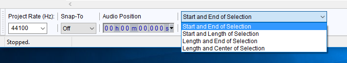

New features in this release
- Details of all the major changes since 2.1.3 can be found in Release Notes 2.2.0.
New Logo
The logo has been given a refresh, and now uses a sans-serif font and a flatter style.

Themes
Audacity now comes supplied with four pre-configured, user-selectable, themes. This enables you to choose the look and feel you prefer for Audacity's interface. see the Themes page for details.
- Light theme: this is a light theme loosely based on the look and feel of earlier Audacity versions, but given a contemporary twist with more modern-looking buttons and icons.
- Dark theme: created by the Dark Audacity project. This is similar to the Light theme, with the same buttons and icons, but given a dark twist.
- Classic theme: The one you know and loved. This theme is a re-creation of the look and feel of earlier Audacity versions.
- High Contrast theme: some users with poor eyesight benefit from a high contrast that is 'eye-popping' for most people.


Light theme Dark theme


Classic theme High Contrast theme
- In addition to the four pre-configured themes there is also a Custom theme.
- By default the custom theme looks the same as Classic theme - but, if you have the right programming skills and tools, you can use this template to create your own theme. Instructions for how to do this may be found in the Audacity Wiki.
MIDI (and Allegro) Playback
Playback of MIDI (and Allegro) files imported into Note Tracks is now available. Please see the Note Tracks page for more details.
This should just work on Windows but for playback on Mac and Linux additional software may be required, see this section on the Playing and Recording page.
But note that there will no use of the Playback meter while Note tracks are played.
Stem Plots
There is a new entry in the Tracks Preferences for Display samples. This setting changes how Waveform and Waveform dB views are displayed. It only affects the appearance of the waveform when you are so far zoomed in that you can see the individual sample dots. At lower zoom levels it makes no difference.
- Stem plot: This is the default setting which draws a vertical line from the track center line to the sample dot, giving a clearer impression of the relative amplitude of the samples. As seen in the images below, when zoomed out close to the minimum for a stem plot, the horizontal distance between sample dots may be more uneven than seen with the connect dots default.
- Connect dots: This is alternative setting yields a waveform where each sample dot is connected to the next sample by a line drawn between them.

Menu reorganization
We have made the Menus shorter and clearer than in previous Audacity versions. The menus have been simplified without losing functionality. The most commonly used functions are found in the top levels of the menus. The functions moved down into lower submenus are better organized.
This is not just a rearrangement. We also added new menu items to make the layout more logical. There are new menu items for exporting as MP3 or WAV. Previously you had to export audio, and then choose the format. You still can do that, but these new items are there for convenience.
Now the ‘Export’ options are under the ‘Save Other’ menu item, where people trying to save audio as an MP3 or WAV file are more likely to find them.
The Extended Menu bar
There are two new additional menus that are hidden by default. They can be turned on at or the Interface pane of .
These extra menus have many extra less frequently used commands. They are particularly useful to VI users, but normally-sighted users may find them useful too.
- Image of the Extended Menu bar as it appears on Windows

- Click, or hover, on either of the Ext- items at the end of the image to read about those menu entries.
| Menu | What you'll find there |
|---|---|
| Ext-Bar | The Ext-Bar menu provides access to Toolbar operations that are not available in the default Audacity menus. These will be of most interest to visually impaired users or those who have difficulty using the mouse. Shortcuts can be assigned to these commands if required. |
| Ext-Command | The Ext-Command menu provides access to extra commands for track focus and movement of the editing or playback cursor that are not available in the default Audacity menus. These will be of most interest to visually impaired users or those who have difficulty using the mouse. Shortcuts can be assigned to these commands if required. |
Appended recording on the same track in now the default
From Audacity 2.2.0 onward the default recording mode has changed so that when you click the Record button on Transport Toolbar, or use the R, Audacity will record at the end of the currently selected (or only) track.
To record on a new track
If you hold the button down the Record button in Transport Toolbar will temporarily change to  . Then clicking on this modified Record button, or using the shortcut Shift + R will cause Audacity to create a new track and begin recording on that track from the current cursor position (or from the left edge of a region on the Timeline).
. Then clicking on this modified Record button, or using the shortcut Shift + R will cause Audacity to create a new track and begin recording on that track from the current cursor position (or from the left edge of a region on the Timeline).
Help buttons
Many places in the user interface have had a help button  added. Examples are all the Preferences dialog panes, all the Effects, Generators and Analyzers and some error messages.
added. Examples are all the Preferences dialog panes, all the Effects, Generators and Analyzers and some error messages.
Clicking on that button in the dialog will link you to the appropriate page in the Manual.
Example: the Amplify effect. Try clicking on the "?" at the bottom right of this image.

Standard and Full shortcut sets
For Audacity 2.2.0 we have reduced the number of preset shortcuts in the application to a "Standard" set. We did this to simplify the set of shortcuts somewhat and to provide greater flexibility for users who want to set their own custom shortcuts.
You can choose to revert to the full set of shortcuts that were in 2.1.3 and earlier by selecting "Full" from the dropdown menu accessed from the button in the Keyboard Preferences dialog.
You can use the button to switch between the two provided default sets of shortcuts at any time.

See Commands and Keyboard Shortcut Reference for more details.
Selection Toolbar improvements
There are now four available settings in the Selection and Audio Position Boxes in Selection Toolbar for the manner in which the details of your selection are displayed:
- Start and End of selection: the start time and the end time of your selection (default setting)
- Start and Length of selection: the start time and the length of your selection
- Length and End of selection: the length and the end time of your selection
- Length and Center of selection: the length and the time at the center of your selection
- 
New commands for using clips via the keyboard
New commands, all of which interact with the clips on the focused track. As yet, there are no default shortcuts:
Note that these extended menus are not turned on by default, to turn them on please see Menu Reference for how to reveal the extended menus.
Running out of disk space
We have now provided an error trap for situations where you are running out of available disk space.
You will now see the error message: "Audacity failed to write to a file in <device>"
This is particularly useful when recording as Audacity will stop recording when the error is trapped, preserving your recording up to that point.
Additional new features
This page New features in this release - appendix gives an overview of further new functionality that has been introduced in this release of Audacity.
Links
> Audacity Release Notes 2.2.0 - detailed release notes for this release of Audacity